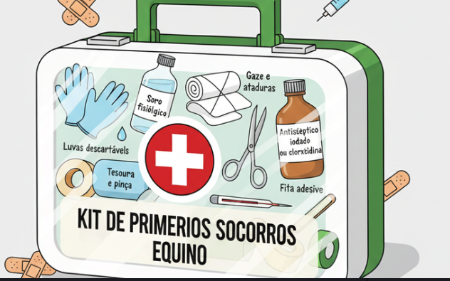

O que você já ouviu sobre tratamentos alternativos?
Você sabia que ao invés dos tratamentos caseiros ajudarem podem atrapalhar?
Uso do café
Coca-cola e Refrigerantes
Cavalos não vomitam
Os músculos esofágicos inferiores são muito fortes, impedindo o refluxo. Tudo o que entra só segue para o intestino.
Vibrissas (Pelos Sensoriais)
Conhecidos como "bigodes", detectam vibrações e auxiliam no equilíbrio. Cortá-los prejudica o bem-estar do animal.
Barriga estufada + Costelas Amostras = Carência de nutrientes
Comportamentos repetitivos são sinais de sofrimento mental por confinamento ou tédio.
Andar em círculos (Weaving)
Causa: Ansiedade. Dica: Permitir contato visual com outros cavalos.
Comer terra ou madeira (Pica)
Causa: Deficiência mineral ou falta de fibra na dieta.

Ação Imediata